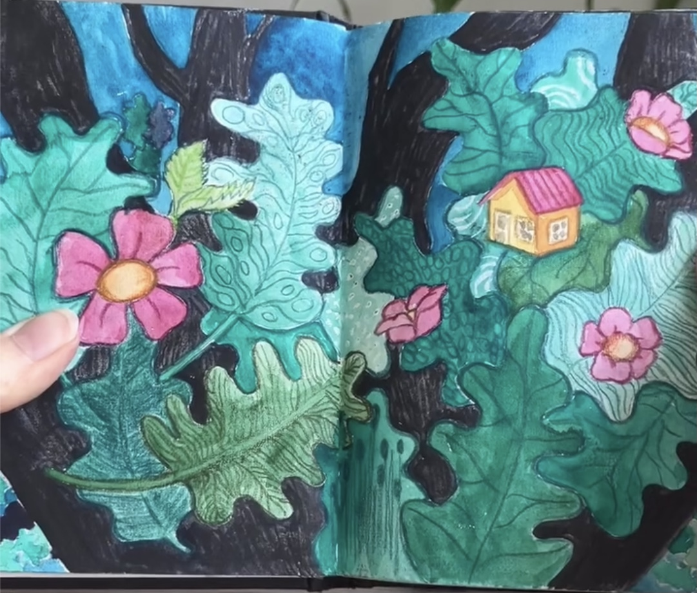
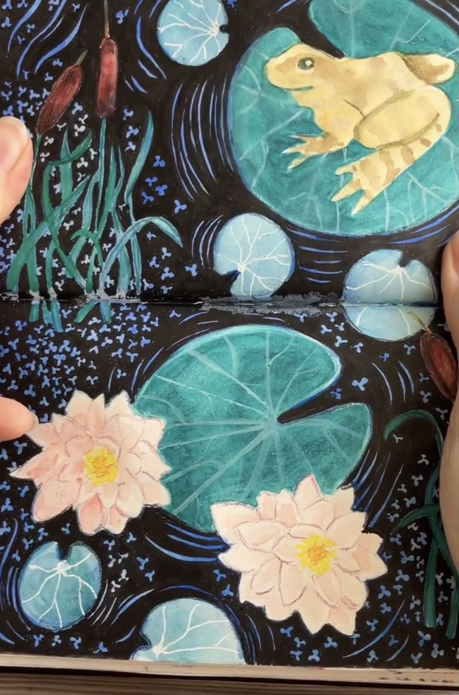
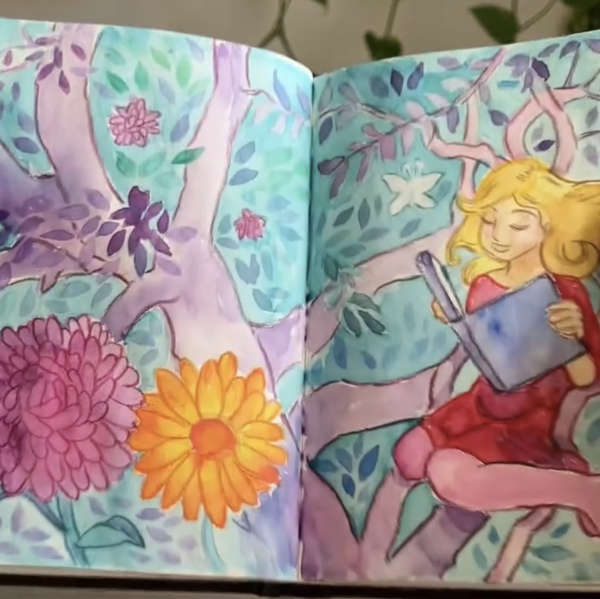
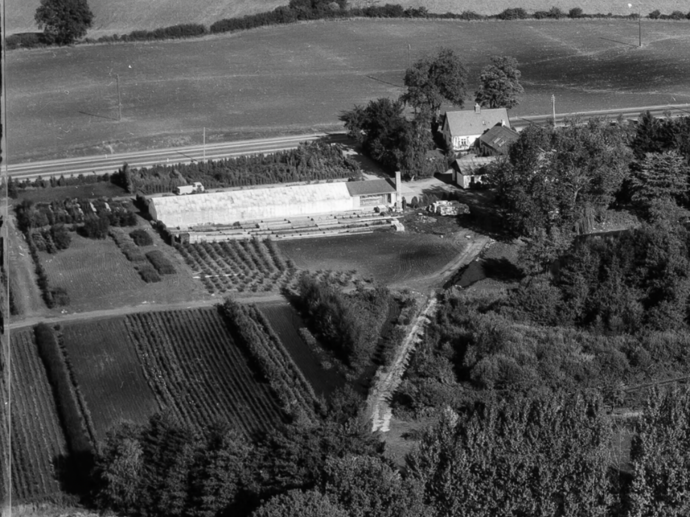
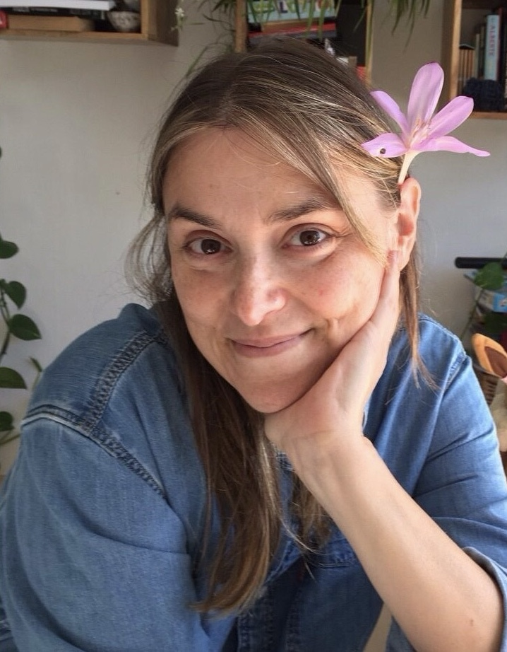

Projektet
Omtrent samtidig med, at de første AI-genererede illustrationer dukkede op, besluttede jeg mig for, at jeg ville lave en håndtegnet børnebog. Det lyder jo godt tosset.
Men det var nu heller ikke helt sådan jeg kom på tanken. For drømmen om engang at lave en børnebog har jeg haft, siden jeg var helt ung, og læste Foundation Course in Art & Design på Cheltenham and Gloucester College of Higher Education. Dengang var der ikke nogen der vidste, at alt det hårde arbejde med at tilegne sig tegneøje, træne finmotorik og mestre forskellige medier en dag ville blive overgået af en computer, der kun skulle bruge 30 sekunder til at tænke sig om. Tværtimod. Kunst blev anset for udtryk for det allermest menneskelige. Ork, nej. Den slags ville en kunstig intelligens aldrig kunne. Maskinerne skulle lave alt det kedelige, og menneskerne alt det sjove. Troede vi.
Når man er illustrator, er billedbogsillustrationer typisk noget af det mest eftertragtede - i hvert fald hvis arbejdet er betalt! Men mine illustratordrømme blev aldrig til noget, for det lykkedes ikke at komme ind på den uddannelse, der skulle have været første skridt på vejen. Og børnebogen blev et skuffeprojekt, der bare aldrig blev prioriteret.
I mellemtiden blev jeg uddannet lærer, fik mand, børn og hus - og det hele skulle passes. Tegneriet kom i baggrunden, og med tiden holdt jeg helt op. Tegning blev noget jeg kunne engang. Jo, selvfølgelig blev det til en krussedulle her og der, men det var ikke længere noget, jeg dyrkede.
Fast forward tredive år, hvor jeg gik ned med stress.
Og nu er jeg ved at nå frem til forklaringen, for stressdiagnosen tvang mig til at gøre ting anderledes. Jeg blev opmærksom på et dybt behov i mig for at gøre ting langsomt. For at dvæle ved øjeblikket. For at gøre ting uden at have et formål - andet end bare at gøre. Så jeg besluttede mig for at tage tegning op igen. Jeg rodede gemmerne igennem, og tog fat der hvor jeg slap: Med en skitsebog og et par farveblyanter.



Det viser sig, at tegning er lige som at cykle: Det kan godt være, at man aldrig glemmer det, men hvis man holder tredive års pause, er man godt nok rusten, første gang man sætter sig op på havelågen! Nøj, hvor var jeg utilfreds! Intet blev, som det skulle. Det var meningen, at det skulle være mit zen-moment, men mine hænder gjorde ikke hvad jeg bad dem om. Jeg havde simpelt hen mistet motorik, som jeg før havde haft, uden at være bevidst om det. Min evne til at visualisere ting, min indre forestillingsevne og forståelse for det tredimensionelle rum, var tæt på helt at være glemt, og det samme gjaldt min erindring om menneskelig anatomi.
Heldigvis for mig tegner begge mine børn, og de var en kæmpe støtte i forhold til at komme i gang igen. De små stunder, hvor vi alle tre sidder og tegner, er rendyrket lykke for mig. Min datter fulgte mange forskellige tegnere på Social Media, og dermed blev inspirationen til vores delte Instagram-konto lagt: fra.skitsebogen. Det blev hurtigt klart, at jeg slet ikke kunne følge med børnene, når det kom til mængden af produktion - en af grundene er, at jeg arbejder meget langsommere - så kontoen er mest min datters nu, men det er også sjovere at se hendes udvikling end min, fordi den er præget af, at hun vokser op samtidig med kontoen!
Tanken om at lave en børnebog vendte tilbage, fordi der opstod noget konkret, som skulle fortælles. Noget, som brændte på.
Beslutningen om at lave en børnebog kom efter en snak med min mor. Min mor er i 80’erne, og oplever i stigende grad at være en af “de sidste” - de sidste, der husker en svunden tid. Tiden før fjernsyn, supermarkeder og velstand. Hendes søskende og nærmeste familie er døde, og lever nu kun i hendes erindring.
Det gik op for mig, at når min mor ikke er her længere, forsvinder alt dette. Og jeg fik et brændende ønske om at holde fast. Måske mest af alt holde fast i min mor, som jeg er dybt knyttet til. Men også i det, som min familie er udsprunget af. Der er en tydelig rød tråd, fra det liv på landet, min mor levede som barn, og den jeg er i dag. En særlig tilknytning til naturen, og til det med at se planter gro.

Så jeg besluttede mig for at lave en børnebog - og at tage mig lige så lang tid om det, som jeg havde brug for. Hele forløbet handler ikke om produktet, men om processen.
Og det har været, og er stadig, en ekstremt givende proces - faktisk endnu mere end jeg havde forestillet mig. Udover det rent terapeutiske i at arbejde med analoge medier, så har projektet også knyttet min familie sammen, på tværs af generationer. Det har skabt snakke med mine børn om deres barndom, sammenlignet med min mors. Det har bygget bro henover generationskløften.
Det har været mig en stor glæde at dele et projekt med min mor, og jeg har lært meget om hende, og haft samtaler med hende, som jeg nok aldrig ville have haft ellers. Om hvem hun var som barn, og hvilken verden hun voksede op i, og hvordan hun blev den, hun er i dag. Hvis ikke jeg havde haft hende som sparringspartner og ydre motivation, tvivler jeg på, at jeg ville blive færdig - for det tager sin kvinde at tegne en hel bog, uanset at det er et con amore-fritidsprojekt.
Det arbejde tænker jeg, at jeg vil dokumentere her på hjemmesiden.
